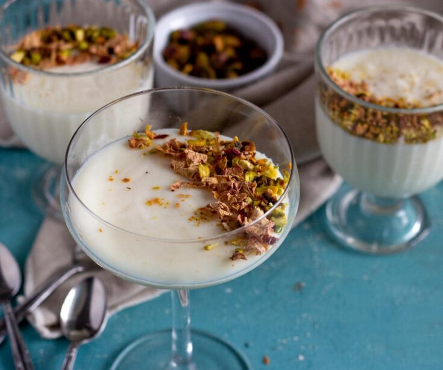

Mahalabia is a popular dessert in Egypt and other Middle Eastern countries. This rich version features both milk and heavy cream.
Ingredients
- 2 cups milk
- 1 cup heavy cream
- 3 tablespoons white sugar
- 2 teaspoons vanilla sugar
- 4 teaspoons cornstarch, or more as needed
- ¼ teaspoon ground cinnamon, or to taste (Optional)
Recipe Instructions
- Combine milk, cream, sugar, vanilla sugar, and cornstarch in a saucepan and whisk until well combined. Slowly bring to a boil over medium heat and cook, stirring constantly, until thickened and mixture coats the back of a spoon, 10 to 15 minutes. Remove from heat.
- Pour pudding into 4 dessert bowls and allow to cool to room temperature, about 30 minutes. Refrigerate until chilled, 1 more hour. Sprinkle with cinnamon to serve.
Return to top
Retrurn to main page